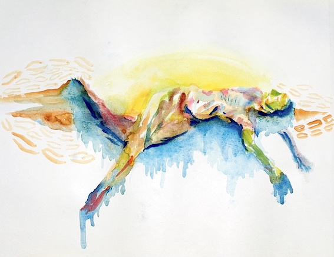
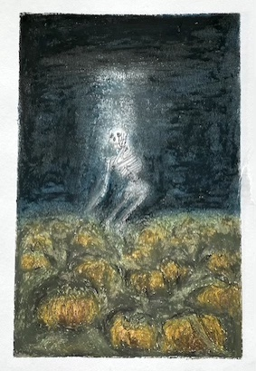

Sublimation

Recipe to sublime a broken heart
Many believe that a broken heart can only be healed with time. Others believe that it can never be healed – it becomes part of you, an inerasable experience that you must learn to live with. It may be caused by the loss of your loved one; the clownery of the government(s); the shattering of your belonging.
No matter what cause of a broken heart you have undergone, today we are not seeking to heal. We will be exploring the different things that are weighing on our auras. Rather than searching for a meaning, a motivation, or an end goal to this practice, we will focus on action. Let action precede the crippling erosions of looping analyses. And breathe.
Ingredients
Sensations of your broken heart:
- Thick blue clouds within your forehead;
- Gaping hole between your heart and your spine;
- Numbing silence below your lungs;
- Growing acidity in your gut;
- Burning reds at the bottom of your throat.
Causes of your broken heart:
- Manifesto of the most-voted-for party in the recent government elections;
- Phone call from a person of your choice (feel free to extract quotes);
- New law leaping closer towards authoritarianism;
- Denial of climate change/hate speech by a prominent politician;
- Rejection letter based not on your qualifications but identity.

Objects of your belonging:
- Hearty pasta (a secret blend of sauce);
- Favourite cup for your tea/coffee/cozy beverage;
- Hoodie from high school that you wear all the time;
- Postcard from your long distance best friend half hanging above your desk;
- Flyer from a political candidate/party fostering social equity;
- Tarot card for the day;
- Voting pass for the European Elections 2024.
How to vote in the Netherlands
Sensations of belonging:
- Flickering reflections of water in the middle of your chest;
- Grounding contact of your soles to the ground;
- Relaxed muscles from your neck to your shoulders
- Lifted eyes and chin;
- Opened shoulder blades to wings;
- Infinite space of air within your torso.
You can substitute any of the above with your available equivalent. Your substitute can be anything, but never less.
Steps
- Gather sensations of your broken heart. Bring them into contact with causes of your broken heart.
- Bring these ingredients to a boil. Let it bubble.
- Breathe in from the bottom of your spine. Let the breath travel to the top of your head.
- Breathe out with the force of your whole body. Let your lungs deflate. Let your shoulders sink. Let your tears run.
- Breathe in for 4 counts. Hold your breath for 16 counts. Breathe out for 8 counts.
- Set aside the sensations and causes of your broken heart. Let them cool.
- Gather ingredients objects of your belonging. Sauté them on a low fire.
- Add the sensations of your belonging. Let it simmer.
- Put your palms together and rub, as if to make a fire between them.
- Close your eyes. Press your palms lightly on your face. Cover all areas.
- Pat your ears, neck, shoulders, arms in sequence.
- Breathe in for 4 counts. Hold your breath for 16 counts. Breathe out for 8 counts.
- Open your eyes.
I hope you enjoyed this meal.
*Copyright: if you wish to share this page, its text, or its images, please attach the link to this site and credit the creator and owner (Rosina Lui).